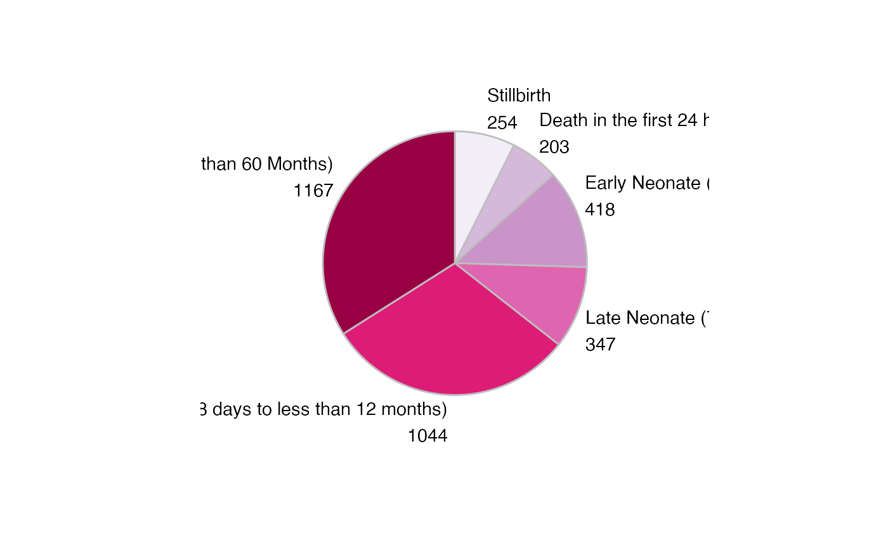
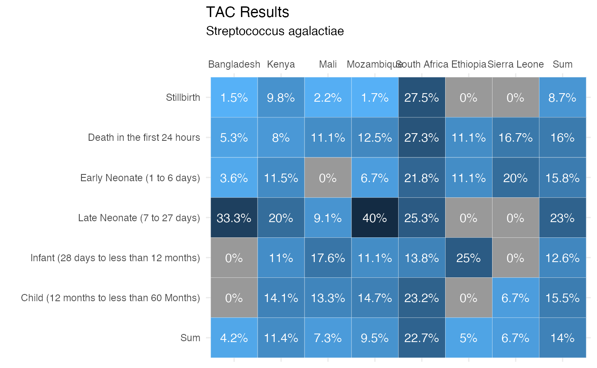
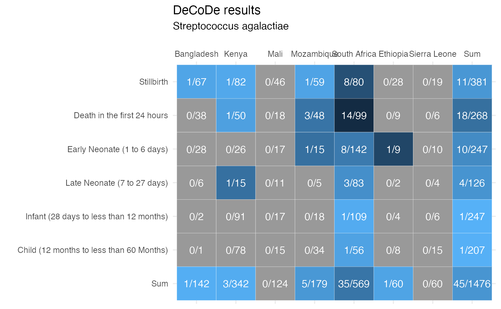
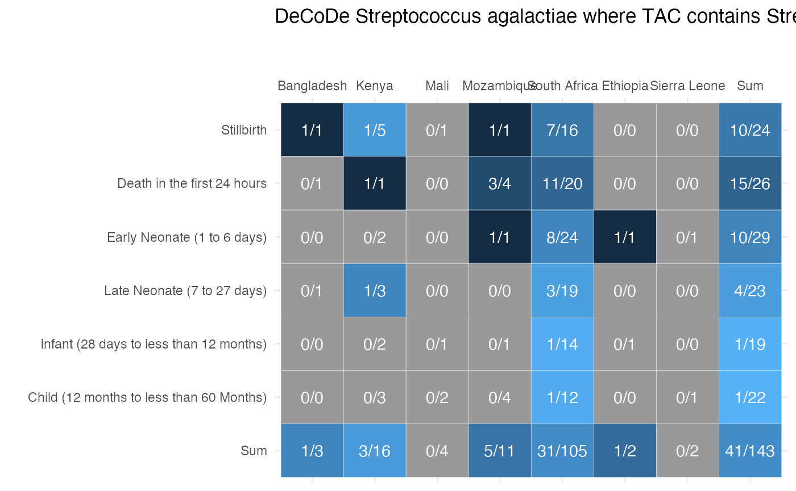

The champs package comes with a few plot and html table functions to help present the output of some of the calc_ functions.
Plot functions
Plot methods only exist for a subset of calc_ functions. Currently, the following are implemented:
-
plot_syndrome_combinations()which works with the output fromcalc_syndrome_combinations() -
plot_top_etiol_by_age()which works with the output fromcalc_top_etiol_by_age() -
plot_margins_site_age()which works with the output fromcalc_cc_allcases_by_site_age(),calc_detected_allcases_by_site_age(), andcalc_cc_detected_by_site_age(). -
heatmap_site_age()which works with the samecalc_functions asplot_margins_site_age().
Plot syndrome combinations for a specified condition
d_syndrome <- calc_syndrome_combinations(d, condition = "Streptococcus pneumoniae", syndrome_names = c( "Lower respiratory infections", "Meningitis/Encephalitis", "Neonatal sepsis", "Congenital infection"), syndrome_values = c( "Pneumonia", "Meningitis", "Sepsis", "Sepsis"), specimen_types <- c( "Cerebrospinal fluid sample", "Tissue specimen from lung", "Whole blood") ) plot_syndrome_combinations(d_syndrome, legend_location = "none", plot_type = "bar", include_text = "full_percent")
plot_syndrome_combinations(d_syndrome, legend_location = "bottom", include_text = "percent")
plot_syndrome_combinations(d_syndrome, "age_breakdown", legend_location = "bottom", include_text = "number")
plot_syndrome_combinations(d_syndrome, "tac_age_breakdown", legend_location = "none", include_text = "full_number")

plot_syndrome_combinations(d_syndrome, "age_breakdown", legend_location = "bottom", include_text = "percent", full_separator = ",")
plot_syndrome_combinations(d_syndrome, "age_breakdown", plot_type = "pie", legend_location = "left", include_text = "number", full_separator = ",")
plot_syndrome_combinations(d_syndrome, "tac_age_breakdown", plot_type = "bar", legend_location = "none", include_text = "full_number", full_separator = "\n")
Plot top etiologies by specified age groups
d_top_etiol_by_age <- calc_top_etiol_by_age(d, age_groups = c( "Death in the first 24 hours", "Early Neonate (24-72 hours)", "Early Neonate (72+hrs to 6 days)", "Late Neonate (7 to 27 days)")) plot_top_etiol_by_age(d_top_etiol_by_age)
Plot margins by site and age
The plot_margins() function works with all the calc_ functions that create numerator and denominator tables with age group and site tabulations.
specimen_types <- c( "Cerebrospinal fluid sample", "Tissue specimen from lung", "Whole blood", "Rectal swab", "Plasma or spun blood specimen") d_dcd <- calc_cc_allcases_by_site_age(d, condition = "Streptococcus agalactiae") d_tac <- calc_detected_allcases_by_site_age(d, condition = "Streptococcus agalactiae", pathogen = "Group B Streptococcus") d_both <- calc_cc_detected_by_site_age(d, condition = "Streptococcus agalactiae", pathogen = "Group B Streptococcus", specimen_types = specimen_types) plot_margins_site_age(d_tac, include_x_label = FALSE, include_text = "full_fraction", plot_title = "TAC Marginal Distributions for Streptococcus agalactiae")
plot_margins_site_age(d_dcd, include_x_label = TRUE, include_text = "fraction", plot_title = "DeCoDe Marginal Distribution for Streptococcus agalactiae")
plot_margins_site_age(d_both, include_x_label = FALSE, include_text = "full_fraction", plot_title = "DeCoDe Streptococcus agalactiae where TAC contains Streptococcus agalactiae")
plot_margins_site_age(d_tac, include_x_label = FALSE, include_text = "full_percent", plot_title = "TAC marginal distributions for Streptococcus agalactiae")
plot_margins_site_age(d_tac, include_x_label = FALSE, include_text = "name", plot_title = "TAC Marginal Distributions for Streptococcus agalactiae")
plot_margins_site_age(d_dcd, include_x_label = FALSE, include_text = "full_fraction", plot_title = "DeCoDe Marginal Distribution for Streptococcus agalactiae")
plot_margins_site_age(d_dcd, include_x_label = TRUE, include_text = "fraction",
plot_title = "DeCoDe Marginal Distribution for Streptococcus agalactiae")

Plot table percentages heatmap
The heatmap_site_age() function works with all the calc_ functions that create numerator and denominator tables using the age group and site tabulations. A visualized table where each cell is colored by the percentage based on the numerator and denominator tables from the calc_ functions is output.
heatmap_site_age(d_tac, include_text = "percent", plot_title = "TAC Results", plot_subtitle = "Streptococcus agalactiae")

heatmap_site_age(d_dcd, include_text = "fraction", plot_title = "DeCoDe results", plot_subtitle = "Streptococcus agalactiae")

heatmap_site_age(d_both, include_text = "fraction", plot_title = "DeCoDe Streptococcus agalactiae where TAC contains Streptococcus agalactiae")

Plot function details
The plot functions are built using ggplot2 from the tidyverse. They leverage three ggplot2 extension packages to improve the labeling of the pie and bar charts.
-
ggforce provides access to
geom_arc_bar()for improved pie charts. - ggfittext provides improved automatic labeling in bar charts.
- cowplot provides dual plot view for the marginal plots.
The plotting outputs are not intended to be highly customizable, but you can modify much of the output with additional ggplot2 commands.
Table functions
The html_table_site_age() function works on calc_cc_allcases_by_site_age(), calc_detected_allcases_by_site_age(), and calc_cc_detected_by_site_age() tabulations.
html_table_site_age(d_dcd)
| Case Type | Bangladesh (n=142) | Kenya (n=342) | Mali (n=124) | Mozambique (n=179) | South Africa (n=569) | Ethiopia (n=60) | Sierra Leone (n=60) | Total |
|---|---|---|---|---|---|---|---|---|
| Stillbirth (n=381) | 1 | 1 | 0 | 1 | 8 | 0 | 0 | 11 (2.9%) |
| Death in the first 24 hours (n=268) | 0 | 1 | 0 | 3 | 14 | 0 | 0 | 18 (6.7%) |
| Early Neonate (1 to 6 days) (n=247) | 0 | 0 | 0 | 1 | 8 | 1 | 0 | 10 (4%) |
| Late Neonate (7 to 27 days) (n=126) | 0 | 1 | 0 | 0 | 3 | 0 | 0 | 4 (3.2%) |
| Infant (28 days to less than 12 months) (n=247) | 0 | 0 | 0 | 0 | 1 | 0 | 0 | 1 (0.4%) |
| Child (12 months to less than 60 Months) (n=207) | 0 | 0 | 0 | 0 | 1 | 0 | 0 | 1 (0.5%) |
| Total (n=1476) | 1 (0.7%) | 3 (0.9%) | 0 (0%) | 5 (2.8%) | 35 (6.2%) | 1 (1.7%) | 0 (0%) | 45 (3%) |
html_table_site_age(d_dcd, margin_denom = TRUE)
| Case Type | Bangladesh (n=142) | Kenya (n=342) | Mali (n=124) | Mozambique (n=179) | South Africa (n=569) | Ethiopia (n=60) | Sierra Leone (n=60) | Total |
|---|---|---|---|---|---|---|---|---|
| Stillbirth (n=381) | 1 | 1 | 0 | 1 | 8 | 0 | 0 | 11/381 (2.9%) |
| Death in the first 24 hours (n=268) | 0 | 1 | 0 | 3 | 14 | 0 | 0 | 18/268 (6.7%) |
| Early Neonate (1 to 6 days) (n=247) | 0 | 0 | 0 | 1 | 8 | 1 | 0 | 10/247 (4%) |
| Late Neonate (7 to 27 days) (n=126) | 0 | 1 | 0 | 0 | 3 | 0 | 0 | 4/126 (3.2%) |
| Infant (28 days to less than 12 months) (n=247) | 0 | 0 | 0 | 0 | 1 | 0 | 0 | 1/247 (0.4%) |
| Child (12 months to less than 60 Months) (n=207) | 0 | 0 | 0 | 0 | 1 | 0 | 0 | 1/207 (0.5%) |
| Total (n=1476) | 1/142 (0.7%) | 3/342 (0.9%) | 0/124 (0%) | 5/179 (2.8%) | 35/569 (6.2%) | 1/60 (1.7%) | 0/60 (0%) | 45/1476 (3%) |
html_table_site_age(d_dcd, margin_denom = TRUE, inside_pct = TRUE)
| Case Type | Bangladesh (n=142) | Kenya (n=342) | Mali (n=124) | Mozambique (n=179) | South Africa (n=569) | Ethiopia (n=60) | Sierra Leone (n=60) | Total |
|---|---|---|---|---|---|---|---|---|
| Stillbirth (n=381) | 1 (1.5%) | 1 (1.2%) | 0 (0%) | 1 (1.7%) | 8 (10%) | 0 (0%) | 0 (0%) | 11/381 (2.9%) |
| Death in the first 24 hours (n=268) | 0 (0%) | 1 (2%) | 0 (0%) | 3 (6.2%) | 14 (14.1%) | 0 (0%) | 0 (0%) | 18/268 (6.7%) |
| Early Neonate (1 to 6 days) (n=247) | 0 (0%) | 0 (0%) | 0 (0%) | 1 (6.7%) | 8 (5.6%) | 1 (11.1%) | 0 (0%) | 10/247 (4%) |
| Late Neonate (7 to 27 days) (n=126) | 0 (0%) | 1 (6.7%) | 0 (0%) | 0 (0%) | 3 (3.6%) | 0 (0%) | 0 (0%) | 4/126 (3.2%) |
| Infant (28 days to less than 12 months) (n=247) | 0 (0%) | 0 (0%) | 0 (0%) | 0 (0%) | 1 (0.9%) | 0 (0%) | 0 (0%) | 1/247 (0.4%) |
| Child (12 months to less than 60 Months) (n=207) | 0 (0%) | 0 (0%) | 0 (0%) | 0 (0%) | 1 (1.8%) | 0 (0%) | 0 (0%) | 1/207 (0.5%) |
| Total (n=1476) | 1/142 (0.7%) | 3/342 (0.9%) | 0/124 (0%) | 5/179 (2.8%) | 35/569 (6.2%) | 1/60 (1.7%) | 0/60 (0%) | 45/1476 (3%) |
html_table_site_age(d_dcd, margin_denom = TRUE, inside_denom = TRUE)
| Case Type | Bangladesh (n=142) | Kenya (n=342) | Mali (n=124) | Mozambique (n=179) | South Africa (n=569) | Ethiopia (n=60) | Sierra Leone (n=60) | Total |
|---|---|---|---|---|---|---|---|---|
| Stillbirth (n=381) | 1/67 | 1/82 | 0/46 | 1/59 | 8/80 | 0/28 | 0/19 | 11/381 (2.9%) |
| Death in the first 24 hours (n=268) | 0/38 | 1/50 | 0/18 | 3/48 | 14/99 | 0/9 | 0/6 | 18/268 (6.7%) |
| Early Neonate (1 to 6 days) (n=247) | 0/28 | 0/26 | 0/17 | 1/15 | 8/142 | 1/9 | 0/10 | 10/247 (4%) |
| Late Neonate (7 to 27 days) (n=126) | 0/6 | 1/15 | 0/11 | 0/5 | 3/83 | 0/2 | 0/4 | 4/126 (3.2%) |
| Infant (28 days to less than 12 months) (n=247) | 0/2 | 0/91 | 0/17 | 0/18 | 1/109 | 0/4 | 0/6 | 1/247 (0.4%) |
| Child (12 months to less than 60 Months) (n=207) | 0/1 | 0/78 | 0/15 | 0/34 | 1/56 | 0/8 | 0/15 | 1/207 (0.5%) |
| Total (n=1476) | 1/142 (0.7%) | 3/342 (0.9%) | 0/124 (0%) | 5/179 (2.8%) | 35/569 (6.2%) | 1/60 (1.7%) | 0/60 (0%) | 45/1476 (3%) |
head(mock$dmg) #> champs_deid site_iso_code site age_group age_group_subcat location_of_dea… #> <chr> <chr> <chr> <fct> <fct> <chr> #> 1 HH23B V Vbrgm Early Ne… Early Neonate (… facility #> 2 SA73Z G Gtmpo Early Ne… Early Neonate (… facility #> 3 HS54M W Wdurc Death in… Death in the fi… facility #> 4 KL97A N Nugtw Stillbir… Stillbirth facility #> 5 QA17R W Wdurc Early Ne… Early Neonate (… facility #> 6 ME83B W Wdurc Stillbir… Stillbirth facility #> # … with 12 more variables: hosp_los_24h <dbl>, hosp_los_48h <dbl>,